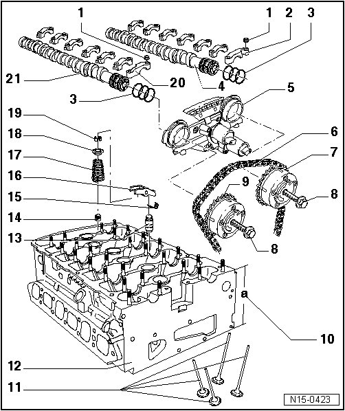

Valvetrain, Assembly Overview
Valvetrain, Assembly Overview

1 5 Nm +l1/8 turn (45°)
2 Exhaust camshaft bearing cap
• Installed location --> [ Installed Position of Camshaft Bearing Caps ]
• Lightly coat contact surfaces of bearing cap 8 with grease (G 052 723 A2) before installing --> [ Lightly coat contact surfaces of bearing caps
7 and 8 with before installing ]
• Installation sequence --> [ Camshafts ] Camshafts.
3 Seal
• If seal is leaking, replace completely
• Lightly oil contact surface of sealing rings when installing control housing
• Do not spread sealing rings excessively when inserting
4 Exhaust camshaft
• Checking radial clearance using Plastigage, Wear limit: 0.1 mm
• Run-out: max. 0.01 mm
• Checking axial play --> [ Camshafts, Checking Axial Play ] Camshafts, Checking Axial Play.
• Identification --> [ Camshaft Identification ] Application and ID.
• Removing and installing --> [ Camshafts ] Camshafts.
5 Control housing
• Lightly lubricate contact surfaces of oil seals before installing
• Disassembling and assembling --> [ Disassembling and Assembling Control Housing ] Camshafts
• Check control housing strainer for soiling before installation --> [ Checking Strainer of Control Housing for Contamination ] Camshafts
• Removing and installing --> [ Camshafts ] Camshafts.
• Markings on control housing --> [ Markings on Control Housing with MPI Engines ] Valve Timing, Checking
6 Camshaft roller chain
• Mark direction of rotation before removing (installation position) --> [ Roller Chain, Marking ] Camshaft Timing Chains, Assembly Overview
• Installing --> [ Intermediate Driveshaft and Camshaft Drive Timing Chains, Installing ] Intermediate Driveshaft and Camshaft Drive Timing Chains, Installing.
7 Exhaust camshaft adjuster
• Identification: 32A
• Only rotate engine with camshaft adjuster installed
• Installing --> [ Intermediate Driveshaft and Camshaft Drive Timing Chains, Installing ] Intermediate Driveshaft and Camshaft Drive Timing Chains, Installing.
8 60 Nm + 1/4 turn (90°)
• Replace
• Contact surface of wheel sensor must be dry around bolt head when assembling
• To remove and install, counter-hold with 32 mm open end wrench on camshaft --> [ Camshafts ] Camshafts.
9 Intake camshaft adjuster
• Identification: 24E
• Only rotate engine with camshaft adjuster installed
• Installing --> [ Intermediate Driveshaft and Camshaft Drive Timing Chains, Installing ] Intermediate Driveshaft and Camshaft Drive Timing Chains, Installing.
10 Cylinder head height
• Minimum height: a = 139.9 mm
11 Valves
• Do not rework, only lapping is permitted
• Valve dimensions --> [ Valve Dimensions ] [1][2]Specifications.
12 Cylinder head
• Check for distortion --> [ Checking Cylinder Head for Distortion ] Cylinder Head
• Removing and installing --> [ Cylinder Head ] Cylinder Head.
• Rework valve seats --> [ Valve Seat Reworking Dimensions ] [1][2]Specifications.
• After replacing replace entire amount of coolant
13 Support element
• Before installing, check axial play in camshafts --> [ Camshafts, Checking Axial Play ] Camshafts, Checking Axial Play.
• Do not interchange
• With hydraulic valve clearance compensation
14 Valve stem seal
• Replacing --> [ Valve Stem Seals ] Service and Repair.
15 Securing clip
• Check for secure seat
16 Roller rocker lever
• Before installing, check axial play in camshafts --> [ Camshafts, Checking Axial Play ] Camshafts, Checking Axial Play.
• Do not interchange
• Check roller for easy movement
• Lubricate contact surface
• Use securing clip to clip onto support element when installing
17 Valve spring
• Note installation position
• Removing and installing --> [ Valve Stem Seals ] Service and Repair.
18 Valve spring plate
19 Valve keepers
20 Intake camshaft bearing cap
• Installed location --> [ Installed Position of Camshaft Bearing Caps ]
• Lightly coat contact surfaces of bearing cap 7 with grease (G 052 723 A2) before installing --> [ Lightly coat contact surfaces of bearing caps
7 and 8 with before installing ]
• Installation sequence --> [ Camshafts ] Camshafts.
21 Intake camshaft
• Checking radial clearance using Plastigage, Wear limit: 0.1 mm
• Run-out: max. 0.01 mm
• Checking axial play --> [ Camshafts, Checking Axial Play ] Camshafts, Checking Axial Play.
• Identification --> [ Camshaft Identification ] Application and ID.
• Removing and installing --> [ Camshafts ] Camshafts
Installed Position of Camshaft Bearing Caps

Points of bearing caps - arrow A - of intake and exhaust camshaft point outward.
Lightly coat contact surfaces of bearing caps 7 and 8 with grease (G 052 723 A2) before installing